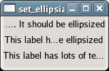

Sets the ellipsization mode used to fit the text to a given width. In the ellipsization process characters are removed from the text in order to make it fit to a given width and replaced with an ellipsis.
If a window is 100px in width, and the text in the GtkLabel would need 200px space to display, the window is resized to fit the label (with Pango::ELLIPSIZE_NONE). The modes Pango::ELLIPSIZE_START, Pango::ELLIPSIZE_MIDDLE and Pango::ELLIPSIZE_END replace some text at the beginning, middle or end with an ellipsis (...) to make the needed width smaller and therefore keep the original window width of 100px.
Example 83. Setting the Ellipsization Mode of a GtkLabel
<?php
// Create a window to hold the label.
$window = new GtkWindow();
// Set up the window to close cleanly.
$window->connect_simple('destroy', array('Gtk', 'main_quit'));
// Create three labels with long text.
$label1 = new GtkLabel('This label has lots of text. It should be ellipsized');
$label2 = new GtkLabel('This label has lots of text. It should be ellipsized');
$label3 = new GtkLabel('This label has lots of text. It should be ellipsized');
// Set the ellipsization mode for all three labels.
$label1->set_ellipsize(Pango::ELLIPSIZE_START);
$label2->set_ellipsize(Pango::ELLIPSIZE_MIDDLE);
$label3->set_ellipsize(Pango::ELLIPSIZE_END);
// Create a vbox to hold the three labels.
$vBox = new GtkVBox();
// Add the labels to the box.
$vBox->pack_start($label1, false, false, 3);
$vBox->pack_start($label2, false, false, 3);
$vBox->pack_start($label3, false, false, 3);
// Add the box to the window.
$window->add($vBox);
// Set the window's size.
$window->set_size_request(150, 75);
// Show the window and start the main loop.
$window->show_all();
Gtk::main();
?> |

See also: get_ellipsize()